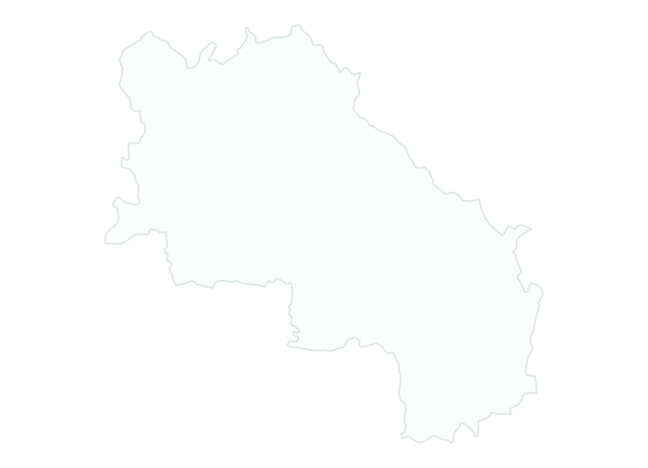

Agrotecnico certificato
Miglior Arboricoltore a Siena

Servizi Arbogreen nella provincia di Siena
Interventi a Siena: domande frequenti
Arbogreen opera nella provincia di Siena?
Sì. Nella provincia di Siena puoi richiedere ad Arbogreen interventi su alberi, giardini, salute delle piante e impianti di irrigazione. Ogni richiesta viene valutata in base alle condizioni e allo spazio disponibile.
Quando è necessario un sopralluogo?
Quando fotografie e informazioni iniziali non bastano, il sopralluogo permette di verificare alberi, accessi, area di lavoro e possibili criticità. Da qui si definisce il passaggio successivo in sicurezza.
Quali interventi puoi richiedere a Siena?
Puoi richiedere potatura alberi, abbattimento alberi, tree climbing, trattamento fitosanitario, creazione e cura giardini e impianti di irrigazione. La valutazione iniziale definisce l’intervento più adatto.
Metodo di lavoro
Prima analisi
Osserviamo il problema e raccogliamo la posizione e le caratteristiche dello spazio, per comprendere la richiesta.
Raccontaci del tuo spazio verde a Siena
da verificare